Use the provided check boxes to mark off your progress as you go.
Use the provided check boxes to mark off your progress as you go.
Use the provided check boxes to mark off your progress as you go.
Locate the 1/8 inch ply joiner wedge parts and remove them from their blank.
Cut them free with a sharp blade and then sand any edge flash off with a sanding block.
Cut four pieces of 1/64 inch plywood for the full height sides of the joiner rod,
and four pieces for the sides of the joiner tubes.
Cut ten pieces of 2 oz fiberglass cloth for incorporation into the rod/bottom-sparcap bondline.
Alternatively you can use two or three layers of 0.5oz carbon or glass tissue
(about 0.015" total thickness in all cases).
Cut two pieces of 3/8 inch OD K&S brass tubing 2.6 inches long.
Stop off one end of each tube with a thin disk of balsa CA'ed in place.
Locate the carbon joiner rods.
Sand the flat elliptical surface with a sanding block to remove any burrs and correct the angle if necessary.
| 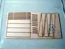 | Ply Joiner Wedges | 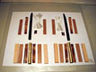 | Joiner Parts Ready For Assembly |
|---|
Working on a flat non-stick surface (like wax paper on a sheet of plate glass),
assemble each set of three laser-cut 1/8 inch ply wedge pieces into 3/8 inch wide wedges with 5-minute epoxy or medium CA.
The central piece in each wedge stack is somewhat smaller than the other two.
When stacked together, this results in a sort of groove in the center of the wedge which
cradles either the joiner rod or tube as needed. Bond strength is not critical here.
Remove excess adhesive from the wedge faces to get good subsequent bonds to the
rod, tube, or sparcap.
Note in the figures below: the joiner rod assembly is shown up side down for clarity. The joiner tube assembly is shown with the 1/8 inch extra side plies already tapered. In fact this tapering is done after the tube assembly is completed, before the tube assemblies are installed during the center panel build sequence. While building the tube assemblies, these side plies are left full thickness.
| 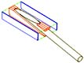 | Joiner Rod Stack Up | 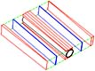 | Joiner Tube Stack Up |
|---|
Roughen and degrease the outside of the brass tube.
Epoxy the tube between its wedges on the top and bottom (these are the long shallow wedges).
Epoxy the carbon rod between the its wedges on top and bottom (these are steeper, one long and one tiny).
Notes: Try to line up the ends of the wedges at the dihedral brake along planes that are slanted back 6 degrees from square. This will ensure that the rod and tube assemblies will slide together leaving no gap (see photo and notes in the last step below).
Use a good slow epoxy for this step. Use cabosil to thicken the epoxy to vaseline consistency so that the pieces will stay put. If you're good at jigging up lots of separate pieces together, proceed immediately with the next step. Otherwise wait until the epoxy sets up to a rubbery state and then remove the splooge before proceeding.
| 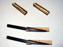 | Joiner Wedge Dry Fit | 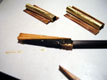 | Gluing The Wedges |
|---|
Epoxy on the 1/64 inch full-height side plates
to the tube and rod assemblies, filling the voids with extra epoxy. For the rod assemblies, this can be
a full height continuous piece. For the tube assemblies, you will probably need to cut the 1/64 inch ply
into wedges to accommodate the larger diameter of the tube.
Then add the provided laser-cut 1/8 inch full-height side plates to the
tube assembly. When done, the tube assembly will be 5/8 inches wide,
and the rod assembly will be 3/8 inches wide.
| 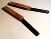 | Rods 1/64 Side Plies | 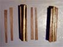 | Tubes 1/64 Side Plies | 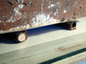 | Curing Tubes 1/8 Side Plies |
|---|
Clean excess epoxy off the assemblies when it's still rubbery.
Deburr the inside tube edges with an old #11 X-Acto knife.
Make sure the rod fits easily into the tube. If not, sand the rod
with fine sandpaper on a hard block.
Use a sanding block on the bottom of the rod assembly to get a clean flat surface for bonding the fiberglass reinforcement.
Layup the 5 layers of 2 oz fiberglass with unthickened epoxy onto the joiner rod assembly bottom surface. Squeegee out excess epoxy and cure on a non-stick flat surface with weights on top.
Note: You can skip this step by incorporating the glass into the bondline when gluing the rod unit onto the bottom sparcap when you build the mid panels (discussed in step 7 below). Pre-gluing it as shown here is one more step, but it does make it slightly easier to align the rod unit over the bottom sparcap.
| 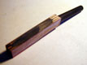 | Prepped For Glassing | 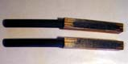 | Glass Installed | 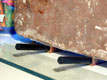 | Curing The Glass |
|---|
Trim the rod and tube assemblies to the
exact correct length.
The trimmed units are shown in the first photo below.
You can bevel the tube assembly to minimize the joiner gap
shown in the second photo. The gap can also be minimized
by being very careful during the step in which the wedges
are glued to the rods and tubes such that their mating surfaces
(those at the dihedral break) end up with a 6 degree face.
This gap is not critical in any case. If either unit ends
up slightly too short, just extend it with a piece of medium
or hard vertical-grain balsa on the end.
| 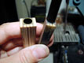 | Completed Rod and Tube Assemblies | 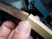 | Assembled Joiner Gap |
|---|
In these photos the 1/8 inch side plies on the tube assemblies are still not beveled, which must be done before the center panel assembly. The beveling is done such that the assembly comes out with a 1/2 inch width and the tube ends up with a sweep which matches the rod sweep (see Mark's original documents for more details, Joiner Plan and Wing Plan). The beveling lines are best determined by sliding the tube assembly onto the completed mid panel and aligning the mid panel with the center panel plan. A belt or disk sander is ideal for beveling the ply. It's OK to leave the assembly a little wider than 1/2 inches, so its sides will be bulged slightly after cleanup (see Wing Building Sequence for more details).
Before assembling the mid panels, glue the joiner rod units down onto the bottom sparcap in the correct position over the plans. This can be combined with step 6 above. Clean off the excess epoxy when still rubbery. You can then proceed with the mid panel assembly and not worry about the rod unit shifting accidentally. Cover the exposed joiner rod with masking tape during assembly to protect it from stray epoxy.
Before assembling the center panel, glue the tube units down onto the ends of the bottom center sparcap. Work over the plans, and use the completed mid/tip panels as jigs to precisely position the tube unit on the bottom sparcap with the correct sweep. Clean off the excess epoxy when still rubbery. If you have the center bolt beam built, you can then proceed with the center panel assembly.
This completes the joiner building sequence. Continue building the mid panels at this point. These built joiner assemblies will be glued into mid and center panels as they are built.
| Revised 4/18/2002 James R. Osborn |
|---|
{kind=link}
{kind=link}
{kind=link}
{kind=link}
{kind=link}
{kind=link}
{kind=link}
{kind=link}
{kind=link}
{kind=link}
{kind=link}
{kind=link}
{kind=link}
{kind=link}